P18 r01 · Đính kèm / Bàn giao / Vị trí
Prototype đã kiểm hành vi · Hình thức chờ review · Backend BLOCKEDGiữ bốn panel và shell494×950; footer Home/P03 không đổi. P17 r02 đã được user tạm chốt. Bản B18 bốn tệp và grid20 là fixture riêng, không chứng minh upload/capacity thật.
Báo cáo / nghiệm thu ·
Nguồn / số đo trước sửa ·
Mở ứng dụng Baseline B18 nguyên bản
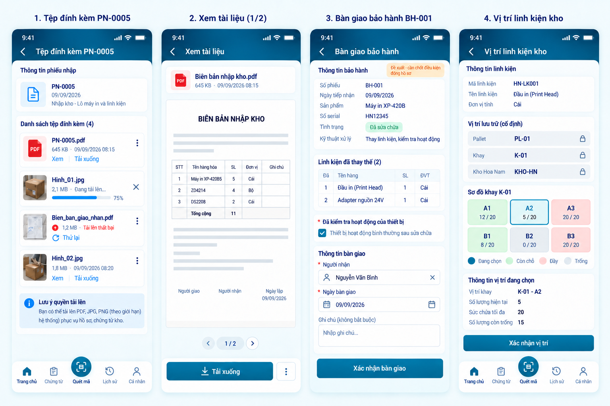
Raster1536×1024 không phải viewport app. Không kéo méo baseline, không có ngưỡng pixel-diff tự đặt.
Actual · 494×950 CSS px · DPR1
Nội dung cuộn bên trong; header/CTA/footer đứng yên. Các ảnh bên dưới cho thấy toàn bộ phần form/thông tin ở cuối vùng cuộn.
Cuối nội dung và nhánh quan trọng
Bàn giao · phần nhập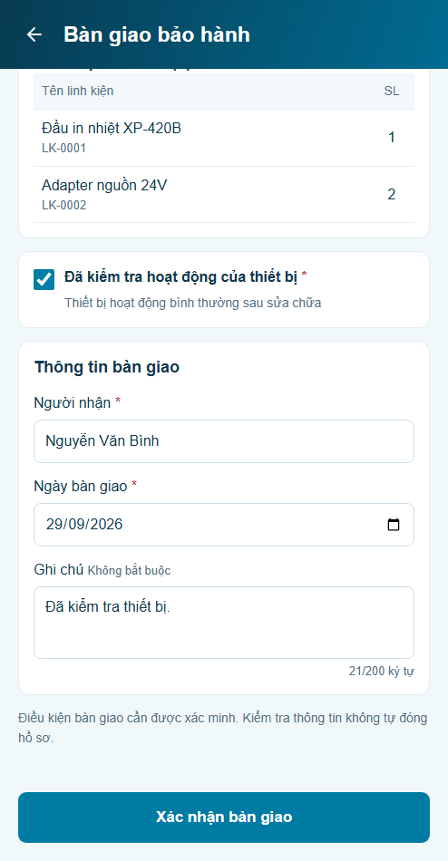
Vị trí · thông tin ô đang chọn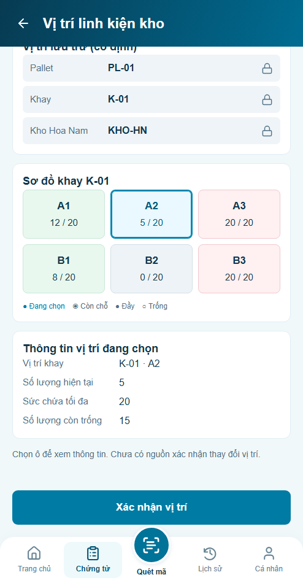
Nguồn sức chứa chưa có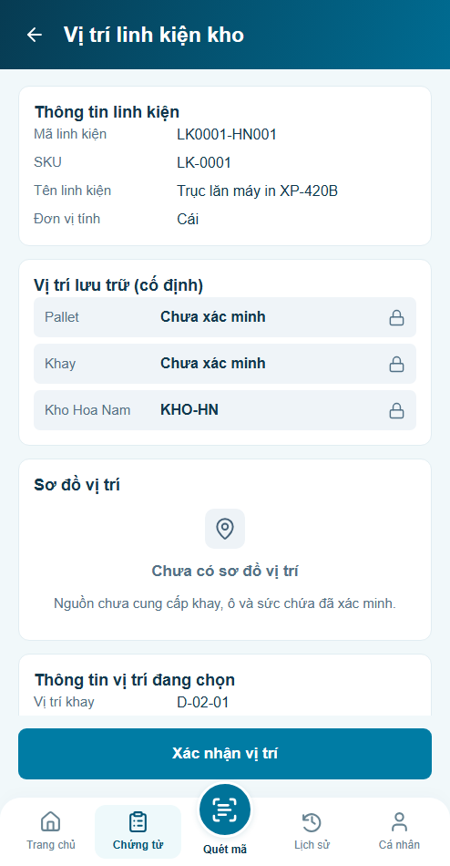
PDF · trang2/2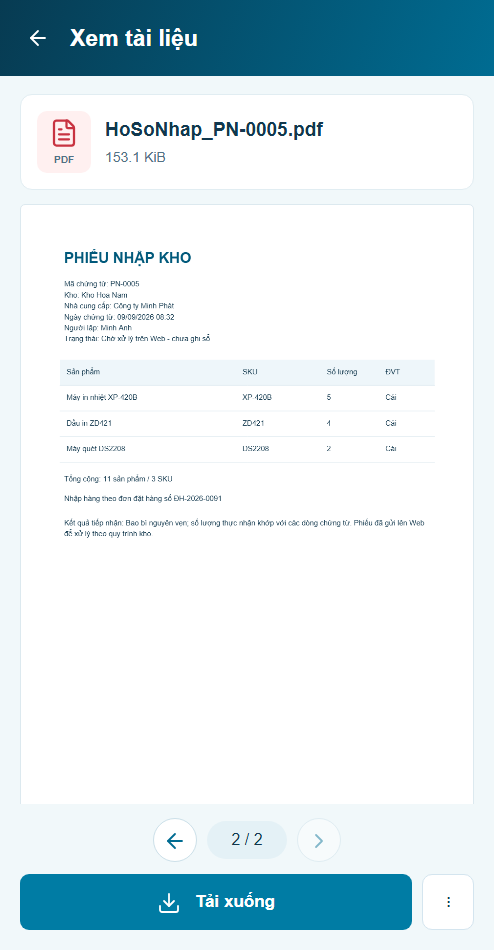
Dependency · trước / sau cùng điều kiện
Trước P18 chưa có module này. Before render từ snapshot source trước sửa, không hoàn nguyên working copy. P12 giữ dữ liệu và tệp nguồn; chỉ viewer chuyển sang PDF thật.
P12 · Tab tài liệu
before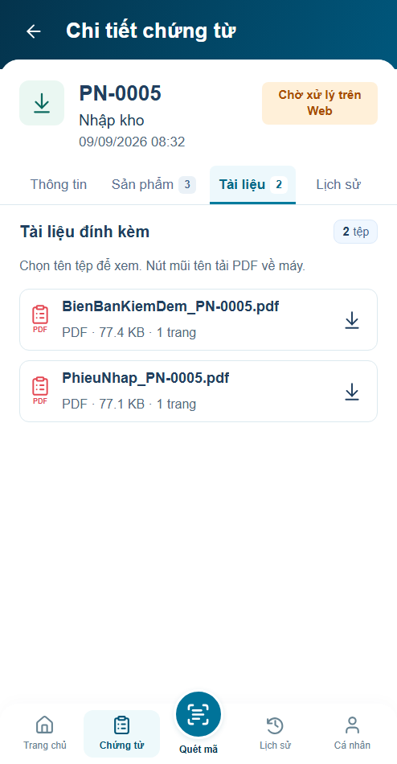
after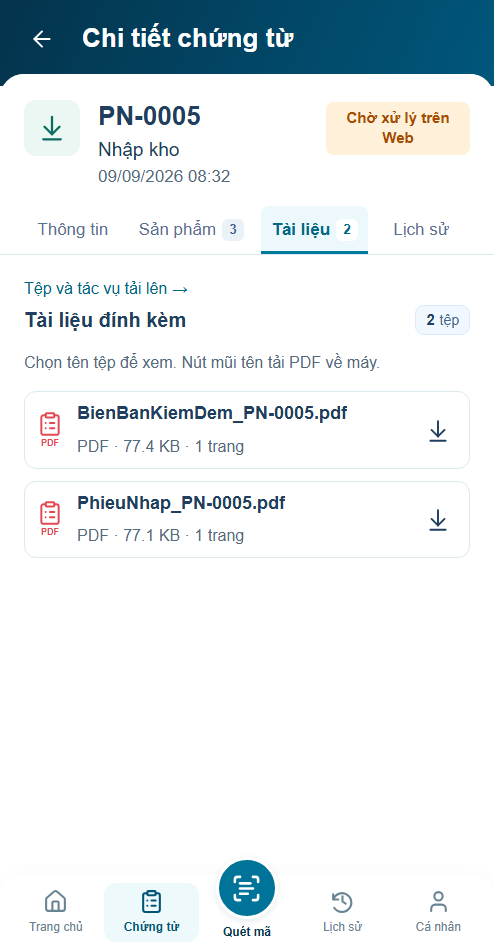
P12 · Xem tệp
before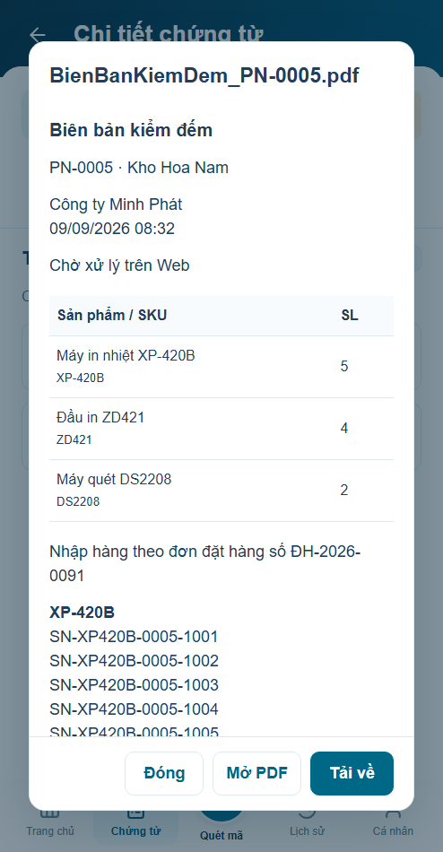
after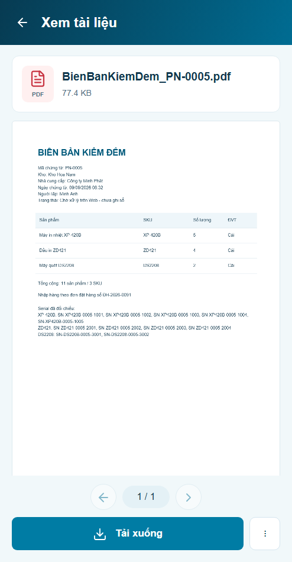
P09 · Hồ sơ bảo hành
before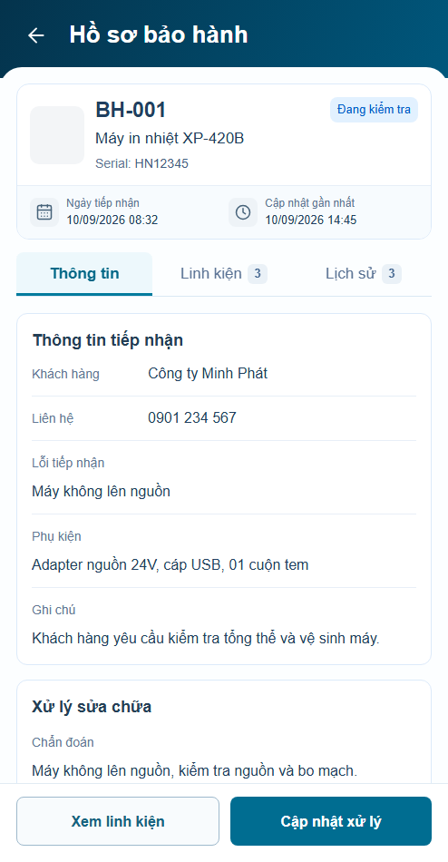
after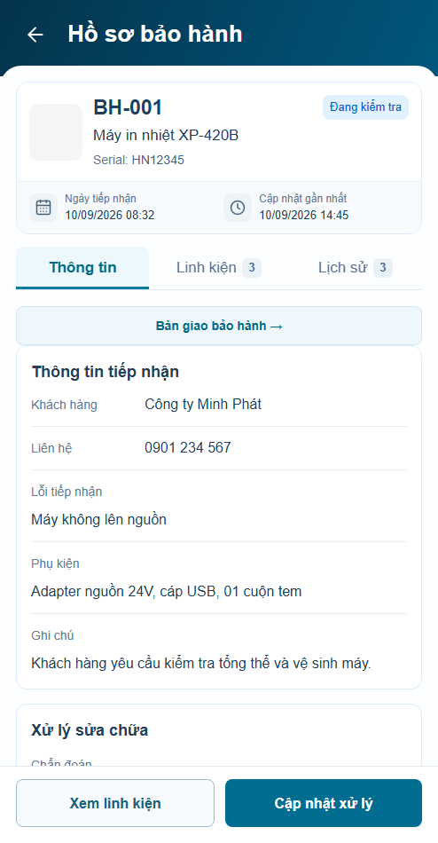
P06 · Vị trí linh kiện
before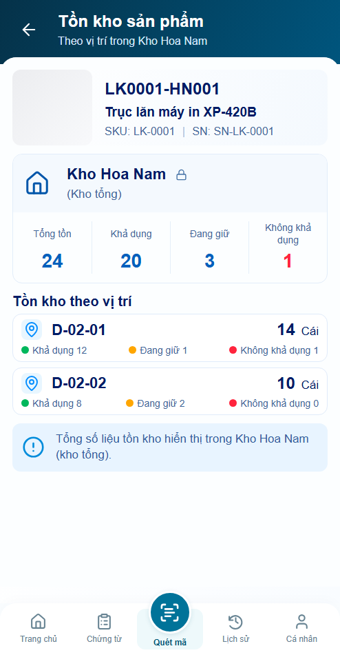
after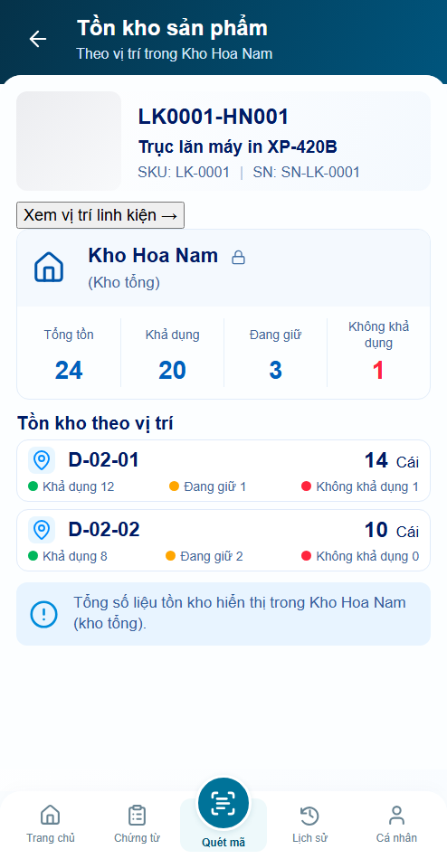
Phạm vi nghiệm thu
54 test logic,13 nhóm browser P18,9 nhóm tab P12 và4viewport footer. Kết quả chỉ áp prototype. Thiếu policy upload, bàn giao/đóng hồ sơ và schema/mutation vị trí. BH-001 hiện Đang kiểm tra; không chỉnh owner theo dữ liệu minh họa của ảnh.